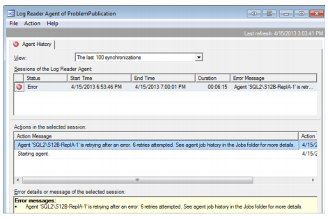
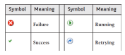
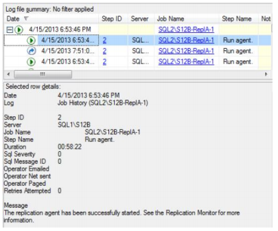
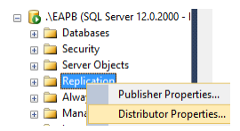
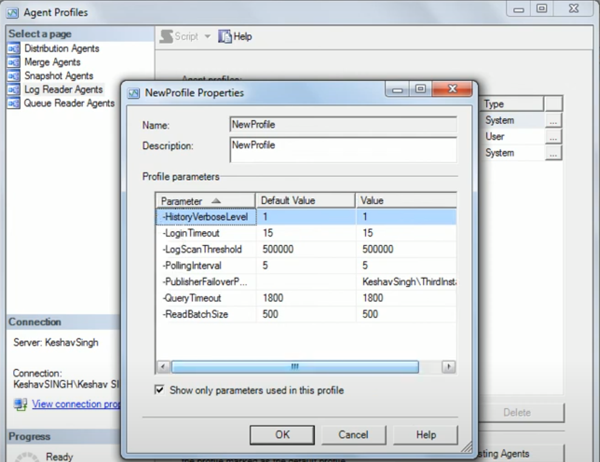

Limitations
- Replicated table cannot be truncated unless removed in the Articles.
- Replicated database cannot be dropped or turned offline unless replication is removed completely.
Troubleshooting Replication
Replication Monitor provides a single interface that lets you view information about the components in your replication setup. It also lets you enable and configure a number of warnings that are triggered when certain events occur. However, the warnings provided by it often do little more than tell you that something isn't right, without providing any specific details. Even if you manage to find an actual error message, it is often inconclusive or even points in the wrong direction. When you open it after a publication has generated an error, you will see red error symbols associated with that publication as well as its Publisher.
Below are the high-level solutions that can be tried:
- Stop then start synchronization.
- Re-initialize.
- Re-create the subscription.
SQL Server is unable to connect to server 'local'
Other error informaion: SQL Server replication requires the actual server name to make a connection to the server.
Reason: sysservers table is empty.
Solution: run sp_addserver '<servername>' then restart the service.
Troubleshooting Snapshot Agent
Usually, Replication Monitor informs us of a problem by placing an issue-related icon in the left hierarchy section on the node where the problem originates, as well as each level above that node. For an uninitialized subscription, the warning icon is displayed only on the subscription itself.


The left-side hierarchy indicates that everything is up and running, but on the right-hand side, you can see that this is not the case. We can quickly discover why our subscription is not yet initialized. The Agents tab tells us that the Snapshot Agent was never executed. To fix, right-click the Snapshot Agent listing on the Agents tab, and then click Start Agent.
The Snapshot Agent usually starts, does its thing, and stops right away. After a few minutes of staring at this screen you probably start wondering why we still show a status of Running. This makes no sense if everything really is running as smoothly as the Replication Monitor leads us to believe. In reality, the Snapshot Agent failed right away. However, Replication Monitor relies on the Snapshot Agent to regularly report status information. Only if that report is not sent for about 10 minutes does Replication Monitor report a problem.
Unfortunately, double-clicking the listing for the failed Snapshot Agent doesn't provide us with any more details.
The only hint we're given is to make sure everything is still working. However, we know already that's not the case. On the Job Activity Monitor, the Snapshot Agent also runs on the Distributor. As before, you can identify the Snapshot Agent job by looking at the job category column.
For more details, look at the history for the Snapshot Agent job. Right-click the job and then click View History. This launches the Log File Viewer.

In the above figure, Step 1 succeeded and Step 2 failed during the last execution. Again, the actual error is not in the entries that have the error symbol, but in the last one that does not. A few lines up, the agent was trying to connect to the Distributor when the error happened. Execute the following T-SQL on the Distributor:
CREATE LOGIN [DOMAIN\SQL2_S12B_Snapshot] FROM WINDOWS WITH DEFAULT_DATABASE = [tempdb]; CREATE USER [DOMAIN\SQL2_S12B_ Snapshot] FOR LOGIN [DOMAIN\SQL2_S12B_ Snapshot]; ALTER ROLE [db_owner] ADD MEMBER [DOMAIN\SQL2_S12B_ Snapshot];
As before, to see if this had the desired effect, we must restart the Snapshot Agent. This, however, leads to our next error, which occurs when validating the Publisher.
To fix our latest problem, we need to create the missing login on the Publisher:
USE [master]; CREATE LOGIN [DOMAIN\SQL2_S12B_ Snapshot] FROM WINDOWS WITH DEFAULT_DATABASE = [tempdb]; GO USE [distribution]; CREATE USER [DOMAIN\SQL2_S12B_ Snapshot] FOR LOGIN [DOMAIN\SQL2_S12B_ Snapshot]; ALTER ROLE [db_owner] ADD MEMBER [DOMAIN\SQL2_S12B_ Snapshot];
After restarting the Snapshot Agent and refreshing the history in the SQL Server Agent Log File Viewer, we will be confronted with the last problem we need to fix for the Snapshot Agent.
The error indicates denied access to a lengthy network path. If you get an error like this, the most likely reason is that the Snapshot Agent does not have the required permissions on the snapshot folder. Remember, the account that is used to execute the Snapshot Agent needs to have write access to this folder.
The publication should be up and running. The Agents tab for publication in Replication Monitor should inform us that the Snapshot Agent completed successfully after creating a snapshot. The Log Reader Agent, on the other hand, is still running but was able to successfully complete at least one action.
Troubleshooting Log Reader Agent
If the error is related to one or more of the publication's replication agents, you will also see the red error symbol on the Agents tab, next to each agent that is having a problem.
You can find more information about an agent and its errors by double-clicking the agent in this listing. If you do this with the Log Reader Agent, the Log Reader Agent dialog box appears.

The error message recommends checking out the agent job history in the Jobs folder. This refers to the job history for the SQL Server Agent job that runs the Log Reader Agent. Remember, the Log Reader Agent runs on the Distributor. So, to get to the job history, connect to the Distributor in Object Explorer, open the SQL Server Agent folder, and double-click Job Activity Monitor. When the Job Activity Monitor dialog box appears, find the Log Reader Agent's job. The category of the Log Reader Agent's job is REPL-LogReader. Right-click the job and then click View History.
This opens the Log File Viewer dialog box. On the right-hand side it shows one row per job execution, with the latest job on top. If you click the plus sign at the left end of a row, you can view details about the individual steps that have run as part of the job.
With each execution and execution step in the job history, you'll find one of the four symbols listed in below table.

You may see multiple entries on a step. It can happen if a problem is encountered during the execution of that step. If a step fails, SQL Server Agent will either try to re-execute that step or it will mark it as failed, depending on how the job step was configured. In the latter situation, you'll see the Failure symbol next to that step. However, in our Log Reader Agent example, the step keeps retrying, so you see the Retrying symbol instead. In either case, the actual error is often not found in the row that is indicating the problem but in one of the preceding rows. In most cases, that row will still show the Running symbol.
If you click the row where the step had an error message, part of the window will show detailed information about that job step execution (ex: Login failed for user 'DOMAIN\SQL2_S12B_LogReader'). This looks helpful at first glance, but it really isn't. It is telling us that the login failed. However, at no point does the job step output reveal what it was trying to log on to. Usually a SQL Server error has a telling "Msg" in front, such as the one shown in the following error message:
However, since that information is stripped out of our job step message, we can't even be sure that it's a SQL Server error instead of, for example, a Windows error. In this case, however, I know that the attempt to connect to the Distributor SQL Server instance failed. The reason I know this is that errors occurring while connecting to the Distributor are the only ones where no instance name is included. The error here is caused by DOMAIN\SQL2_S12B_LogReader not being a known SQL login on the Distributor.
CREATE LOGIN [DOMAIN\SQL2_S12B_LogReader] FROM WINDOWS WITH DEFAULT_DATABASE = [tempdb];
After running the above T-SQL snippet on the Distributor, go back to the Log File Viewer and click Refresh. You should now see a new job step execution, although you might have to wait a minute for this to show up. As it turns out, this new job step execution still ends in a retry. The new error is shown in below figure.
This message is another example of why troubleshooting replication can be difficult. It states that SQL2\S12B does not exist or is not a valid Publisher. It looks as though it's indicating that the agent cannot connect to the Publisher. However, this error is actually still caused on the Distributor. The last part of the error, "…you may not have permission to see available Publishers," is pointing to the actual problem. While the Log Reader Agent can now successfully connect to the Distributor, the login has not yet been mapped to a user in the distribution database. Therefore, it cannot access the list of valid Publishers. To fix this, we need to run more T-SQL on the Distributor:
USE [distribution]; CREATE USER [DOMAIN\SQL2_S12B_LogReader] FOR LOGIN [DOMAIN\SQL2_S12B_LogReader]; ALTER ROLE [db_owner] ADD MEMBER [DOMAIN\SQL2_S12B_LogReader];
The script creates the user account and adds it to the db_owner role, which is required. Creating the user and granting the missing permissions, however, still does not solve the problem. After another refresh, the job history of the Log Reader Agent still shows continuous retries. Checking the latest execution in the log reveals that there is now a different problem: the agent cannot connect to the Publisher. This information is again all the way at the bottom of the step output.
The error you will find there sounds strangely familiar: Login failed for user 'DOMAIN\SQL2_S12B_LogReader'. This is exactly the same error that we had before. However, this time, if you go up a few lines in the output, you will see the helpful remark "Validating publisher". So while the error doesn't seem much more helpful than the first time we saw it, this additional piece of information at least tells us what the Log Reader Agent was trying to do when the error occurred. So this time, we'll connect to the Publisher and run the same T-SQL snippet as before, in order to resolve this problem:
CREATE LOGIN [DOMAIN\SQL2_S12B_LogReader] FROM WINDOWS WITH DEFAULT_DATABASE = [tempdb]; GO; USE [ReplA]; CREATE USER [DOMAIN\SQL2_S12B_LogReader] FOR LOGIN [DOMAIN\SQL2_S12B_LogReader]; ALTER ROLE [db_owner] ADD MEMBER [DOMAIN\SQL2_S12B_LogReader];
After we grant this last bit of access to the publication database, the Log Reader Agent gets to work successfully. The message associated with the most recent execution indicates that the replication has been successfully started.

Troubleshooting a Subscription
At first, it appears that our subscription is running as expected. However, our subscription is still uninitialized. The fact that no Performance or Latency value is displayed is a strong indication that something is seriously wrong.
To get more information, double-click the un-initialized subscription. The Distributor to Subscriber History tab gives us information about the past data movement between the Distributor and the Subscriber.
So we have to go somewhere else to find the cause of our problem. The data movement between Distributor and Subscriber is handled by the Distribution Agent. The next thing to check, therefore, is whether the Distribution Agent's job is reporting any problems. Where you find that job is dependent on the subscription model. In the case of a Pull Subscription, the Distribution Agent runs on the Subscriber. However, our example is set up as a Push Subscription, so we need to connect to the Distributor. Once connected, open the Job Activity Monitor and find the Distribution Agent's job. As before, you can use the job category to identify this job.

On first glance, everything seems fine here too. However, note the Status column, which says: "Between retries". This means that, during the execution of the previous job step, a problem was encountered, and now the SQL Server Agent is waiting a minute before retrying that same step. Right-click the job and select View history to get to the root of this problem.
Above figure also shows the error that is causing the continuous retries: the connection to the Distributor keeps failing. To address this issue, we must create the missing login by executing the following T-SQL snippet on the Distributor:
CREATE LOGIN [DOMAIN\SQL3_S12B_DistPush] FROM WINDOWS WITH DEFAULT_DATABASE = [tempdb]; GO USE [distribution]; CREATE USER [DOMAIN\SQL3_S12B_DistPush] FOR LOGIN [DOMAIN\SQL3_S12B_DistPush]; ALTER ROLE [db_owner] ADD MEMBER [DOMAIN\SQL3_S12B_DistPush];
So far, it looks as if the Replication Monitor is not useful at all. However, if you wait long enough after a problem occurs, Replication Monitor will eventually show that there is a problem too. Usually you will have to wait less than 10 minutes for an error to show up.
Double-clicking the error opens the Subscription dialog box. In this case, it even shows a useful error message.
Despite the information provided by Replication Monitor in the above figure, tend to concentrate on the job history for replication troubleshooting, at least during the setup phase of replication, because the information there is usually more comprehensive and up to date. However, after replication has been running for a while, you might encounter problems about which you can get good details only by using Replication Monitor. In the current error, it tells us that the process cannot connect to the Subscriber. Create the missing login by running this snippet on the Subscriber:
CREATE LOGIN [DOMAIN\SQL3_S12B_DistPush] FROM WINDOWS WITH DEFAULT_DATABASE = [tempdb]; GO USE [ReplB]; CREATE USER [DOMAIN\SQL3_S12B_DistPush] FOR LOGIN [DOMAIN\SQL3_S12B_DistPush];
To fix the next problem, you need to log on to the Distributor and grant the account executing the Distribution Agent read access to the snapshot folder share.
After performing the previous step, the Distribution Agent should now run successfully, as shown in below figure.
If you now go back to Replication Monitor, you should see a subscription with a status of Running and performance displayed as Excellent. However, in the first few minutes after setting up a subscription or fixing a subscription problem, Replication Monitor often reports the performance as critical. That usually goes away after a few moments, so don't be too alarmed if performance is off at first.
Always check the details
You should also be aware that on rare occasions Replication Monitor can show misleading information. For example, the subscription information shown in below figure indicates that everything is working as expected. However, if you look closely you will see that the latency value is 00:00:00, a value not likely to appear in a live system.

If such a value shows up, it might just indicate that there is currently no data that needs to be replicated. On a production system, however, it almost always means trouble. In some cases, the subscription was marked for re-initialization using an existing snapshot. However, the existing snapshot was already expired, so the subscription never finished its initialization step. If you double-click the subscription, the Subscription dialog box will open and reveal that the initial snapshot is not yet available.
To resolve this issue, you need to manually start the Snapshot Agent. You might also have to re-initialize the subscription after the Snapshot Agent is finished. Sometimes in this situation, the subscription gets stuck and does not use the new snapshot on its own.
Replication Monitor is a helpful tool when it properly notifies you that there's a problem; however, if it shows that everything is in great shape, make sure you look twice, so you don't miss a subtle hint indicating that there is a problem.
Potential Problems
- The account does not have the appropriate rights. If something does not seem to work as expected, review all applicable accounts and make sure that they're configured with the correct permissions.
- Another issue that might complicate matters is that error messages do not always point in the right direction. For example, the message, "The remote server "SQL1\S12A"does not exist, or has not been designated as a valid Publisher" really means that the Snapshot Agent does not have the necessary permissions to access the distribution database. It has nothing to do with the Publisher. Error messages is not always a straightforward process.
- If you're using a snapshot share that is located on the Distributor, you might have to grant write access to the Snapshot Agent account on both the share and the underlying folder.
- If you've assigned Windows domain accounts to the replication agents and use impersonation to connect to the other servers in your replication setup, you might have to grant the Windows account that is executing the SQL Server service read access to Active Directory.
- Use a SQL Server login (such as sa) to execute the replication wizards, instead of a Windows account. It will usually run into fewer issues – not only with replication, but with other functionality as well – if the objects that are dealing with are owned by a user associated with a SQL Server login and not a Windows account.
Data problems
If there is a problem in the replicated data, the Distribution Agent will keep trying to resolve it.
In the above example, it has a bunch of error rows with start times about two-and-a-quarter minutes apart. The error is the same for all of them: "The row was not found at the Subscriber when applying the replicated command". This error is caused by a mismatch between the data in the publication database and the subscription database, potentially caused by a delete being executed at the Subscriber. Remember, while the subscription database is technically read-write, the target tables of a subscription to a Transactional Publication should be handled as if they were read-only.
This error prevents the Distribution Agent from continuing because it could cause inconsistent data on the Subscriber. Instead, the Distribution Agent keeps trying, in the hopes that the error disappears. Each execution takes about one and a quarter minutes, as you can see in the Duration column. During that time, the replication agent shows that everything is working smoothly. However, during the remaining minute of the retrial interval, the Replication Monitor display looks vastly different.
Which results you receive depends on whether the process is currently retrying or not. Therefore it is a good idea to get into the habit of opening the dialog box regularly.
Synchronization Error

Possible Cause: Based on experience, if this occurred during the first initialization, it is possible that it’s either because the service accounts of either agent/service is not in the logins in the first place (ex: default service account) or publisher and subscriber have different account.
Solution:
-- Run on Subscriber CREATE LOGIN [EAPB\SQL-REPLICATION$] FROM WINDOWS WITH DEFAULT_DATABASE = [tempdb] GO USE [AdventureWorksLT2017] -- Whatever your DB is GO CREATE USER [EAPB\SQL-REPLICATION$] FOR LOGIN [EAPB\SQL-REPLICATION$] ALTER ROLE [db_owner] ADD MEMBER [EAPB\SQL-REPLICATION$]
Log Reader Agent Error
Cause: db_owner should be ‘sa’ or any user that has access to it (should not be blank).
Solution:
EXEC sp_changedbowner 'sa'
Other Variants of Transactional Replication
Transactional Publications with Updatable Subscriptions in a Hierarchical Topology
By SQL Server 2016, it was officially removed.
Merge VS Transactional Replication with Updatable Subscriptions
| Merge | Transactional Replication with Updatable Subscriptions | |
| Data Flow | Periodic synchronization | Immediate or queued updates |
| Offline Updates | Yes | No |
| Conflict Handling | Yes | No |
| Performance | Slower due to merge process | Faster for real-time updates |
| Best For | Environments with frequent offline updates | Real-time updates with rare Subscriber changes |
Now updateable subscribers is being deprecated and Peer-to-peer is the desired upgrade path. So if you need transactions replicated transactionally you would want updateable subscribers, if you want bi-directional synschronization between nodes which are frequently disconnected - Merge Replication is the way to go.
Transactional Publications in a Peer-to-Peer Topology (Peer-to-Peer Transactional Replication)

- Enables multi-master replication.
- Publisher streams transactions to all the peers in the topology.
- The publisher streams transactions to all the peers in the topology.
- All peer nodes can read and write changes and the changes are propagated to all the nodes in the topology.
- It creates an environment where all participants are both publishers and subscribers (bi-directional updates).
- It allows you to create a distributed database environment where all SQL Servers can provide and receive updates with low latency.
- Further lowers the autonomy previously offered by Transactional Replication, by allowing any data to be changed on any server, and all participating servers will receive the updates.
- Use SQL Server security features to take appropriate precautions to ensure that data can only be updated from approved locations.
Merge VS Peer-to-Peer Transactional Replication
| Merge | Peer-to-Peer Transactional Replication |
| One publisher and one or more subscribers | All nodes are both publishers and subscribers(though original node is highlighted with green arrow) |
| Trigger-based - in the background implementation they also use different agents. | Transactional - which means it transmits transactionally consistent changes. |
| Has Conflict Resolution (conflict resolution priority can be specified). | Generates an alert if conflict resolution is enabled, stops replication while allowing both instances to work independently till the conflict is solved. |
| Advisable to do schema changes only from the original node. |
Enable Server as Publisher at the Distributor
- Go to the server assigned as the Distributor > Replication > Distributor Properties.
- On the Publishers page, click the Add button. This will open a standard SQL Server connect to server dialog box. Connect to the server that will use the distributor. Apply the Administrative link password when prompted.

Distributor Password
Enabling a Database for Replication
Any member of the db_owner fixed database role can define a publication in a database. However the database must first be enabled for replication by a member of the sysadmin fixed server role.
- Connect to the SQL Server instance that has been designated as the Publisher. Make sure it is already linked to the Distributor. Go to Object Explorer > Replication folder > Publisher Properties.
- This launches the Publisher Properties dialog box, which has two pages:
- General – Specifies a new administrative password for the connection to the Distributor in the event it was changed there.
- Publication Databases – Enable databases for publishing. For each database, select whether Transactional Replication, Merge Replication, or both are allowed.
Publication Access List
To be able to add an account to the PAL, the account must be configured as follows:
- Be a login on the Publisher.
- Be a login on the Distributor.
- Have access to the publication database.
Access and configure the PAL through the publication's properties. Once a login is added to the PAL, the user associated with it automatically becomes a member of several additional database roles in the publication database. Do not manually remove the user from those roles. If you selected the push subscription topology, the account used to connect to the Distributor must additionally be a member of the db_owner fixed database role in the distribution database.
PAL is a security measure that prevents unauthorized users from accessing replication data. It is independent of the other permissions maintained by SQL Server. Instead, it is maintained as internal information in the publication database and cannot be directly accessed with T-SQL. It provides for an easy way to control who can subscribe to a publication without having to worry about other SQL Server permissions. Only logins that meet the following three requirements can be added to the PAL for a specific publication:
- The login must exist on the Distributor and Publisher.
- A user associated with that login must exist in the publication database.
You do not need to grant any permission to the user in the publication database. The user in the publication database is required only because the PAL information is stored in that database. Login information, on the other hand, is stored in the master database, so that information might not be accessible in all situations. However, database user information is readily available within each database, as it is stored at the database level.
A login that is a member of the PAL and also of the db_owner role in the subscription database can be used to execute the New Subscription wizard. Providing a Windows account to execute the Distribution Agent is needed. That account needs the same set of permissions as the account setting up the subscription, with one addition: the account must also have read access to the snapshot folder. This also applies for Merge Replication. The only difference is that a Merge Agent is used instead of a Distribution Agent.
The account executing the Distribution Agent is required to be a member of the PAL. However, in a few situations SQL Server 2012 seems not to enforce this requirement. If no errors were received requiring that logins be added to the PAL, this is most certainly not intentional and therefore you should always add the Distribution Agent account to the PAL, just to make sure that the next Critical Update or Service Pack you install does not shut down your replication setup.
Adding additional Distribution databases
- In the SQL Server instance that was set up as the Distributor, go to Object Explorer > Replication folder > Distributor Properties.
- General – You'll see a list of the installed distribution databases. Click the New button beneath the list of distribution databases. This opens the New Distribution Database dialog box.
- Publishers – Click the Add button, and then click Add SQL Server Publisher. Register additional Publishers with the newly added Distributor. Select the SQL Server instance that you want to add as a Publisher. The Publisher will be added to the list of registered Publishers on the Publishers page of the Distributor Properties dialog box.
In the row for the new Publisher, select the distribution database you want to use for that Publisher from the Distribution Database drop-down list, next to the Publisher's name. Select the correct database, because once clicked OK, this selection cannot be changed. The only way to change the distribution database for an existing Publisher is to drop all publications on that Publisher and then delete the Publisher from the list of registered Publishers on the Distributor. Then set everything up again.
Configuring Retention
- Once subscription is created, configure the settings that define replication's retention.
- Retention refers to the length of time vital publication data is kept before being deleted and how long a Subscriber can be offline before becoming invalid.
- SQL Server replication supports four retention settings.
- The first three distribution retention settings are properties defined in the distribution database. Therefore, they are global for all Publishers using the same distribution database.
- The fourth retention setting is publication-specific.
- Although none of the retention settings are subscription-specific, they can have a significant impact on the Subscribers.
- A Subscriber that does not request an update within the retention period will be deactivated or dropped. If that happens, a complete resynchronization of the Subscriber is required, making the data on the Subscriber unavailable during that time.
- On the other hand, retention settings directly affect how much space you need to provide for the distribution database because data that has not yet been delivered to all Subscribers is held in that database for the specified time. When selecting the replication retention settings, you need to provide your Subscribers with enough time to load the data from the Distributor. For this, you need to plan in time for accidental or scheduled outages. But you also need to keep the time short enough so that the distribution database does not run out of space.
Configuring retention on the Distributor
- The maximum retention time specifies the time that the replication data is held in the distribution database if it has not been delivered to all Subscribers.
- The minimum retention time (also called transaction retention period) defines the minimum time the data is kept, even if it already was delivered to all Subscribers. It is also the minimum retention time is the maximum guaranteed time in which a snapshot can be used to initialize new or disabled Subscribers.
However, if the option "Create a snapshot immediately and keep the snapshot available to initialize subscriptions" was selected during the creation of the publication, every snapshot is valid for at least the maximum retention time. During this time, the minimum retention time is effectively ignored. Therefore the distribution database might grow significantly, as the snapshot requires all the transaction data to be kept, too. After the snapshot is expired, both the minimum and the maximum retention times are used again to determine the lifespan of replicated transactions. The following steps explain how to set the retention times on the distribution database:
- In Object Explorer of the SQL Server instance that will be assigned as a Distributor, right-click the Replication folder for that instance, and then click Distributor Properties.
- On the Distributor Properties dialog box, the General page displays a list of configured distribution databases and their retention values.
- Click the browse button at the end of the row that contains the distribution database whose settings you want to change. This launches the Distribution Database Properties dialog box. In the Transaction retention section, you can specify the minimum and maximum retention times, and you can specify whether those values are measured in hours or days.
If there is transactional data in the distribution database that has not been synchronized with a Subscriber for more than the maximum retention time, the data will be purged, and the Subscriber will automatically be marked as inactive. To re-activate an inactive Subscriber, the subscription has to be re-initialized from a fresh snapshot. If you have a Subscriber that becomes incapable of synchronizing from time to time, a scan occur as the result of scheduled or unscheduled connection interruptions, you need to set the maximum retention time value high enough to guarantee that the Subscriber can reconnect before it is deactivated.
On the other hand, the longer the maximum retention time, the more data needs to be stored and kept in the distribution database. So the higher this value, the more storage you need for the distribution database. In addition to the distribution database taking up more hard-drive space, the replication throughput will also decrease. So you need to find a medium between Subscriber availability and storage and performance requirements when setting this value. The default values for transaction retention are 0 hours for the minimum and 72 hours for the maximum.
This setting defines how long information about the health of the replication setup is kept in the distribution database. The setting does not affect the Subscribers. However, the history data can be helpful in troubleshooting issues that might arise. The default of 48 hours is usually a good choice. The Queue Reader Agent security section at the bottom of the Distribution Database Properties dialog box is not used in a standard Transactional Replication installation.
Configuring retention on the Publisher
This setting determines when a subscription is actually removed from the Distributor if data is not synchronized. The amount of time is usually a lot higher than the maximum retention setting in the distribution database.
- For a Push Subscription, if a subscription lapses past the publication retention period, the subscription is removed completely from the Distributor and nothing remains.
- For a Pull subscription, an orphan is left on the Subscriber that must be cleaned up manually.
In either case, if you want to continue to use the instance as the Subscriber, set it up again from scratch. The default value for the publication retention period setting is two weeks (336 hours). The following steps explain how to modify the publication retention period:
- In Object Explorer of the SQL Server instance that will be assigned as a Publisher, expand the Replication folder for that instance, and then expand the Local Publications subfolder. Right-click the publication you want to change, and then click Properties.
- On the Publication Properties dialog box, on the General page configure the retention period. Values can be specified in hours or set the retention period never to expire.
Configuring retention on the Subscriber
- The retention settings determine how long to maintain the data necessary to synchronize a Subscriber. The settings directly affect the space required on the Publisher and the Subscribers, as well as how long a Subscriber can be offline. You need to balance these two sides of the medal and pick the shortest interval possible before a subscription expires and can no longer be synchronized.
- Configure retention in the publication's properties, however, the retention settings affect Subscribers directly.
- The retention settings for Merge Replication are a lot simpler than for Transactional Replication.
- Merge Replication has only a single setting that defines how long a Subscriber can be offline.
- If the Subscriber exceeds that time limit without a successful synchronization, you have to reinitialize that Subscriber.
- In such cases, changes that happened on the Subscriber since the last synchronization will be lost.
- In addition, if the Subscriber has not been reinitialized within a timeframe of twice the retention period, the subscription is dropped completely.
- For example, the default retention period for Merge Replication is 14 days. That means, the Subscriber will be disabled if it has not been synchronized within 14 days. Then, if the Subscriber is not reinitialized within the 14 days after that, the subscription is removed completely from the Publisher.
- In the case of a Push Subscription, its Merge Agent is automatically removed too.
- In either case, the data in the tables on the Subscriber remains unchanged.
- For a Subscriber that is republishing, you can select a different retention setting, as long as it is smaller than the retention setting on its Publisher. However, it is strongly recommended that you use the same retention setting on all republishing Subscribers in a single Merge Replication hierarchy.
- The following steps describe how to set up the retention period on your subscription:
- In Object Explorer of the SQL Server instance of the Publisher, expand the Replication folder for that instance and then expand the Local Publications subfolder. Right-click your publication and select Properties.
- On the Publication Properties dialog box, in the General page, it contains the Subscription expiration section, which is where you can select the length of the retention period. You can also select a unit of time, such as minutes, hours, or days.
Merge Replication Conflicts
In Merge Replication, if a row in a published table at a Subscriber changes, the change will be replicated to the Publisher during the next synchronization with that Subscriber. From there, the change will be propagated to the other Subscribers during their next synchronizations. Such a system opens up the possibility for conflicts.
For example, suppose someone changes a customer's phone number on Subscriber A, and then someone else changes the same phone number on Subscriber B, but to a value different from the one on Subscriber A. If Subscriber A is synchronized before Subscriber B, the Publisher will accept the change from Subscriber A. Afterwards, when Subscriber B is synchronized; the Publisher will detect a conflict. There are three types of conflicts:
- Update-update conflict – A row is changed on one node (Publisher or Subscriber) and then changed on another node. The most common cause for a conflict.
- Update-delete conflict – A row is updated on one node, but deleted on another node.
- Failed-changed – A conflict can also occur if a change that is applied to one node cannot be applied to another node. For example, a successful update on one Subscriber might result in a constraint violation on another Subscriber. These conflicts can occur due to a number of reasons, such as mismatched constraint definitions or mismatched triggers or identity columns being used without automated identity management.
Configuring the Tracking Level
- In Object Explorer of the SQL Server instance that will be assigned as a Publisher, expand the Replication folder and its Local Publications subfolder. Right-click your publication and select Properties. When the Publication Properties dialog box appears, go to the Articles page.
- From the list of articles, select the table article you want to change, and then click the Article Properties button.
- When a drop-down list appears, select Set Properties of Highlighted Table Article. This opens the Article Properties dialog box. Here you can view the current setting for the tracking-level property or change its value.
When setting up Merge Replication, you can choose between two tracking options that determine how the Merge Agent compares concurrent changes in order to identify conflicts. The two options are available through the Tracking Level property associated with each table article. The following steps describe how to change the property or check its current value in an existing publication:
- Row-level tracking
- Column-level tracking
By default, Merge Replication uses row-level tracking because it requires the least amount of resources. If a row gets updated, the merge triggers record the value from the row's UNIQUEIDENTIFIER column. This column identifies a row across the Publisher and all Subscribers, even if all other column values have changed. During the synchronization of two nodes, the Merge Agent checks if the same row has been changed on both sides. If that has occurred, the Merge Agent records that the row has a conflict and resolves the conflict according to the conflict resolution rules that were set for the article.
This tracking requires only the UNIQUEIDENTIFIER value for each changed row to be stored in the change log. Therefore, row-level tracking uses only a minimal amount of storage space. However, this process potentially marks non-conflicting changes as conflicts. For example, assume Person A updates a customer's phone number on the Publisher and Person B updates the email address of that same customer on the Subscriber. Those two changes are not in conflict with each other. However, if both values are stored in the same row of the Customer table, row-level tracking will mark those changes as a conflict because both changes affected the same row.
Column-level tracking does not consider changes to two different columns in the same row as a conflict. However, to be able to make the distinction, this form of tracking requires more resources. In addition to recording the UNIQUEIDENTIFIER value for each changed row, it also tracks the specific columns that have changed. For example, one person updates the customer's phone number and another person updates that customer's email address. Because column-level tracking tracks the column information, the Merge Agent can correctly identify this situation as a non-conflict. Only if the same column in the same row changes at different sites, does the Merge Agent record a conflict and handle it according to the conflict resolution rules.
Conflict Resolvers
When a conflict is detected, the Merge Agent employs a conflict resolver to determine which version of the changes is kept. Think of a conflict resolver as a Merge Agent plug-in whose specific purpose is to deal with conflicts. When setting up Merge Replication, you can choose which conflict resolver is used on a per article basis.
On the Article Properties dialog box, choose to use either the default resolver or any other resolver that has been registered with the Distributor. A resolver decides which version of the conflicting data wins; that is, which version of the changes will be used on both nodes.
For example, Maximum Conflict Resolver, bases its decision on the value of a single column. You can specify which column it uses by providing a column name in the Enter information needed by the resolver text box under the list of resolvers. In a conflict situation, the side that has the larger value in this column wins the conflict. This can be useful in a situation where updates can have different priorities. Suppose that Person A updates the phone number of a customer on one subscriber. Because the phone number is rarely used to contact customers, Person A sets the value in the update_priority column of that same row to 1. At the same time Person B changes the email of the same customer. Email is the main communication channel for a company, so Person B marks this change as important by setting the value in the priority column to 3. If Merge Replication is set up to resolve conflicts based on the value in the update_priority column and also set up to use the Maximum Conflict Resolver, the change to the email will win this conflict situation, while the change to the phone number will be lost. The phone number change however will be copied into a conflict table so you can review it at a later time. The resolver that is selected by default is aptly named the default resolver. Note that the subscription's priority is not the value in the update_priority column, but rather a setting for the entire subscription.
The default resolver
The default resolver uses the priority in conjunction with the subscription type to decide which version of the data survives a conflict. You can designate each subscription as either a client type or a server type. The first publication always has a priority of 100. A client type subscription does not have a priority itself. Instead, all changes made at a Subscriber with a client type subscription assume the priority of the publication at the time of synchronization.
All changes originating from a Subscriber with a server type subscription assume the priority of that subscription. Also keep in mind that on a Subscriber, you can create a publication that republishes articles of a subscription only if these articles were created by a server type subscription. Once a change has been synchronized the first time and therefore has a priority assigned to it, that priority does not change again throughout subsequent synchronizations.
For example, above figure contains eight nodes in a Merge Replication hierarchy. Node A is the Publisher that contains the main publication. It has a priority of 100. Node C is a Subscriber with a server type subscription subscribing to Node A. That subscription has a priority of 50. Node C republishes to three of its own Subscribers. Node B and H are Subscribers that each has a client type subscription (client type subscriptions don't have their own priority value). All other nodes are Subscribers that each have a server type subscription. Those subscriptions each have their own priority.
In a topology like this, you have to run several synchronization steps to get every change to every node. For example, suppose a user modifies data on Node F. To distribute this change:
- Node F must first sync with Node C.
- Then Node C must sync with Nodes A, G and H.
- Finally Node A must sync to Nodes B, D and E.
- If at that time a conflict is detected between a change at Node D and the original change at Node F, D's change will win because of the higher priority. As a result, Node A now must sync again with B, C and E.
- After that, C must sync with all of its Subscribers.
In this scenario, five synchronization steps are required to fully synchronize this change. Keep this in mind when you design a complicated layout of Merge Replication participants: the greater the number of nodes involved, the more steps it takes to fully synchronize each one. Term "Full Synchronization" may be used to mean a complete synchronization that includes all the steps necessary to get all nodes in sync. Below table shows which change survives a full synchronization if conflicting changes occur on two nodes. The information in the table assumes that all articles use the default resolver and both changes occur before the first synchronization step.
The default resolver in Merge Replication adheres to the following synchronization rules:
- A change on the main Publisher always wins any conflict.
- A change on a node with a client type subscription loses if a conflicting change occurred on its direct Publisher before the synchronization. It's immaterial whether the conflicting change to the Publisher was applied directly or through synchronization with another node.
- A change on a node with a client type subscription that was successfully synchronized with its direct Publisher without a conflict will, at successive synchronization steps, be treated exactly as if the change had originated at that Publisher.
- If two conflicting changes originate at two nodes with server type subscriptions, the change applied to the node with the higher priority wins, independent of the type, number, and priority of nodes between them, and independent of the order of the synchronization steps.
Other resolvers
Several pre-defined resolvers are installed when you set up SQL Server. They range from date-dependent resolvers, to resolvers that use the maximum or minimum value of the conflicting values, to those that build an average of the conflicting values. There is also one special type of resolver, the Stored Procedure Resolver. It allows you to supply a stored procedure that contains the necessary logic to determine which version wins. This is probably the easiest way to implement a customized resolver.
- Custom resolvers
- Business logic handlers
- Interactive conflict resolution
- You must run the Windows Synchronization Manager on the Subscriber.
- The subscription must be a pull subscription
- You must configure a series of properties on the subscription as well as on the publication.
Resolvers can be thought of as plug-ins. The plug-in interface for resolvers is actually published, so you can write your own conflict resolvers using C++. This way, you can really customize how Merge Replication conflicts should be treated. After creating your own custom resolver, you must register it with the Distributor before it can be used.
Another way to influence the outcome of conflicts is to use BLHs, which are assemblies written in managed code using the CLR. You install BLHs the same way you install custom resolvers. However, BLHs are a lot more flexible. They can be executed at the Subscriber or at the Distributor and can respond to a long list of events, including data changes with no conflict. A BLH that tracks updates is executed for every row that's updated. During its execution, a BLH can reject changes, resolve conflicts, and even modify values.
Another way to resolve conflicts is to use the Windows Synchronization Manager to resolve them interactively. Keep in mind several important points:
The Windows Synchronization Manager is not part of SQL Server; instead it comes pre-installed on Windows desktop operating systems and can be installed on server operating systems.
Reviewing Conflicts
The Merge Agent records all automatically resolved conflicts. You can review them later and even change their outcome. The following steps describe how to review automatically resolved conflicts:
- To create a conflict to work with, execute an update statement against the same two rows in both the subscription and the publication databases.
- Use Object Explorer to connect to the Publisher, expand the Replication folder, and the Local Publications subfolder. Right-click the publication and then click View Conflicts.
- On the Select Conflict Table dialog box, select the table for which you want to review the conflicts. Only tables that encountered conflicts are shown, together with the number of conflicts for each of them.
- Select the table and click OK. This opens the Replication Conflict Viewer dialog box. The Replication Conflict Viewer dialog box is split into an upper pane and lower pane. The upper pane contains the list of all conflicts that occurred on the selected table. The list specifies the conflict loser, the type of conflict, and when the conflict was detected. When you select one of the conflicts in this list, the bottom pane shows details about the column values of the conflicting rows. It includes the values of the winner as well as the loser.
- In the upper pane, select the remaining conflict, the one whose Id value equals 13, and then click the Submit Loser button at the bottom of the dialog box. This will tell SQL Server that you do not accept the automatic conflict resolution and that you're submitting the prior loser of the conflict as new winner. Submitting a new winner for a conflict will remove the entry from the conflict list and will update the Publisher to reflect the new values. From there, the changes will be distributed to the other nodes during their next synchronization.
Select the second conflict listed in the upper pane, and then click the Remove button. This will remove the conflict from the list. Removing an entry like this will not change any data in the replicated tables. It just tells SQL Server that you accept the change.
Disabling a Publication
- Right-click on Replication then select "Disable Publishing and Distribution".
- On Disable Publishing page, confirm to disable the publishing on the server.
- On Wizard Actions page, choose what happens when you click Finish.
- Finish the wizard.
Removing Replication
- Stop all the replication agents before running your scripts (in a default replication setup that means stopping the SQL Server Agent jobs that run the replication agents).
- Connect to the SQL Server instance in Object Explorer and generate a script to delete replication.
- Right-click the Replication folder and then click Generate Scripts. This launches the Generate SQL Script dialog box. Using this dialog box, generate scripts that either create or delete replication components.
- In the "Script the commands" section, select the option "To drop or disable the components".
- Select all available components that are listed. That means the Distributor, all publications, and all subscriptions that are not grayed out.
- At the bottom of the screen, click Generate Script, and then click Open in New Query Window. A script is then generated that you can use to drop all the selected replication components.
- Run the script to delete the specified components.
- If the setup that will be removed involves more than one SQL Server instance, repeat above steps for each instance. Start with the Subscribers, followed by the Publishers, and finally the Distributor. If any of the steps generate an error, make sure you're removing the instances in the correct order, and then regenerate and run the new scripts because the previous run probably made changes to the setup.
- For single server setup, manually delete any remaining orphaned subscription entries. In such cases, right-click the subscription, and then click Delete.
- After removing replication, execute sp_cleanupdbreplication.
EXEC sp_dropdistributor @no_checks = 1, @ignore_distributor = 1
Can you update a Subscriber?
| Snapshot Replication | Transactional Replication | |
| Can you update the subscriber table? | Yes, but it is not recommended. | By default, no. The subscriber is usually read-only because updates are expected to come from the publisher. |
| Impact on Publisher? | No impact. Changes at the subscriber do not propagate back to the publisher. However, the next snapshot refresh will overwrite any changes made on the subscriber. | No direct impact unless updatable subscriptions or peer-to-peer replication is configured. |
Misc
If there will be a scenario where 3 instances where involved and:
- 1st instance is the Publisher.
- 2nd instance is the Subscriber and at the same time being mirrored to the 3rd instance.
- 3rd instance is the Mirror.
- Every time 2nd instance fails over to the 3rd instance, no issue should occur on the replication to the 1st instance.
